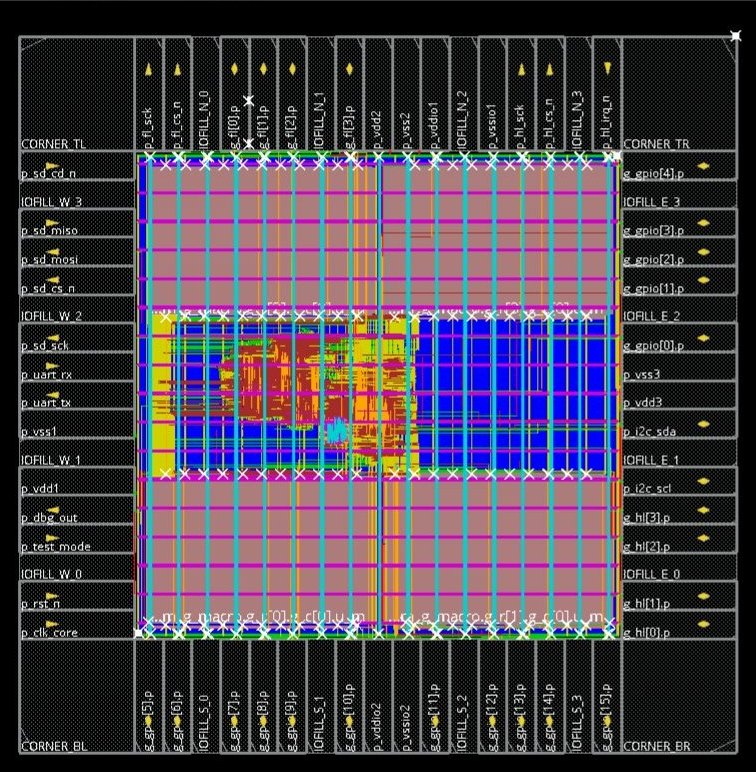
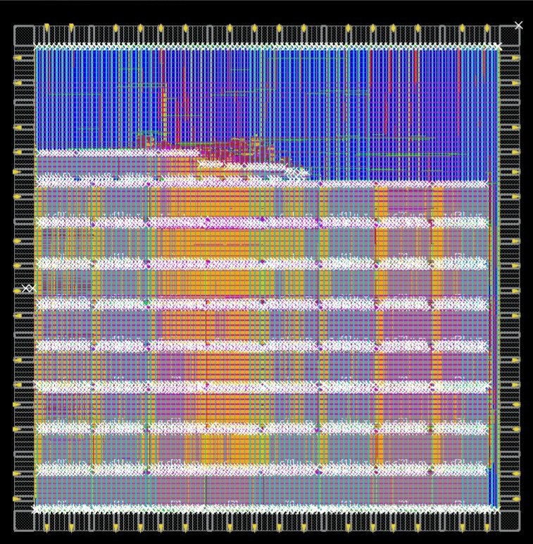

VLSI & IC Design
Turning compute architectures into silicon through RTL design, functional verification, and PPA-driven exploration across the full Cadence, Vivado, and Synopsys flow.
Overview
A clean compute idea is only worth as much as the chip it ends up on. VLSI is the discipline of dragging a high-level architecture through every stage, including RTL, simulation, synthesis, and place-and-route, without losing what made it interesting in the first place.
The work here treats power, performance, and area as design variables, not afterthoughts: arithmetic units reshaped to match precision budgets, datapaths balanced for timing, and every micro-architectural choice justified against the PPA frontier.
Sub-areas
- RTL Design (SUB-01): Synthesizable Verilog / SystemVerilog for arithmetic blocks, pipelines, and control state machines.
- Functional Verification (SUB-02): Directed and constrained-random testbenches, golden-reference comparisons, and assertion-based checks.
- Architecture Optimisation (SUB-03): PPA-driven trade studies across pipeline depth, parallelism, and precision to find the right operating point per workload.
- Low-Power Design (SUB-04): Clock-gating, operand isolation, and precision-adaptive datapaths for energy-constrained inference.
- Flow Integration (SUB-05): End-to-end Cadence / Vivado / Synopsys flow from RTL through synthesis to gate-level signoff.
- Arithmetic Units (SUB-06): Custom adders, multipliers, and approximate primitives, which are the building blocks behind every accelerator.
ASIC Designs
Five chips built around the SQA accelerator and taken from RTL to signed-off layout on the GPDK045 45 nm PDK in Cadence tools (academic practice designs, not fabricated). See the SQA ASIC Chips overview.

RISC-V Controller Chip
PicoRV32 microcontroller with my own peripherals and C firmware: 1.5 mm die, +1.094 ns at 100 MHz.

AI Accelerator Core
The SQA inference core from FPGA RTL to a routed, timing-signed-off 45 nm block: 100 MHz, 72,806 cells, 4.28 mW.

SQA V1 Chip
All engine buffers off chip: 280 pads on a pad-limited 4.68 mm die.

SQA V2 Chip
Hot buffers on chip as six SRAM macros, weights streamed from SDRAM: the smallest die, 2.4 mm.

SQA V3 Chip
Complete SoC: RISC-V CPU, accelerator, 4 MB on-chip SRAM and a 1080p display controller on a 6.12 mm die.

Memory Design
Placeholder SRAM macro models for every chip, a flop-versus-macro study and a Spectre-simulated SRAM column.
Active Threads
- R-05: SQA ASIC Chips: Five GPDK045 designs with full sign-off (DRC, LVS, SI timing, IR, EM, gate-level simulation); a V1 redo with a circuit-under-pad ring is in progress.
- R-01: Accelerator Architecture: The compute core inside the Hybrid Neural Accelerator, featuring LUT / log primitives, AXI4 SoC integration, and PPA sweeps.
- Industrial Attachment: Neural Semiconductor, covering Cadence operation and software exposure in an industry setting (Sep–Oct 2025).
Toolchain
| Cadence Design Suite | Genus, Innovus, Pegasus, Tempus, Voltus and Xcelium: the full RTL-to-GDS flow on five GPDK045 chip designs, plus industrial exposure during the attachment. |
| AMD Vivado | Synthesis, implementation, and timing analysis on FPGA fabric, acting as the daily prototyping tool. |
| Synopsys HSpice | Mixed-signal and analog verification at the block level. |